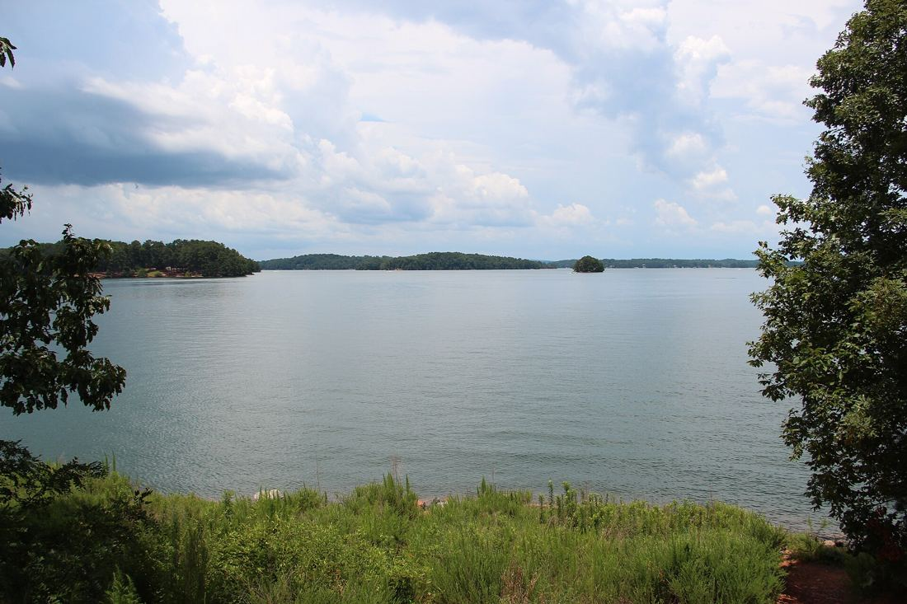

East Forsyth County, Georgia
Best new optionCumming / Pilgrim Mill side of Lake Lanier. The only new full pass from the 30 Sep 2026 scout.
Example listing2785 Pilgrim Mill Rd — 1.36 acres, ~3,680 sq ft, listed $665K (active as of 28 Aug 2026; re-verify)
Lakes / mountainsLake Lanier minutes away; Amicalola Falls ~51 min; Mount Yonah ~62 min
CrimeFBI UCR 2024, Forsyth Sheriff: ~45 violent crimes per 100k
College / culture / travelUNG Dahlonega ~38 min; Atlanta museums and airport ~67 min
Turkish (3)
- Turkuaz, Suwanee ~15 min
- Ephesus, Alpharetta ~18 min
- Efendi, Alpharetta ~22 min
Sichuan (2)
- Masterpiece, Duluth ~29 min (Michelin-listed)
- Xi Hotpot, Duluth ~30 min
- Hot, humid, long summers and a short winter
- Mountains are a planned trip, not a daily backdrop